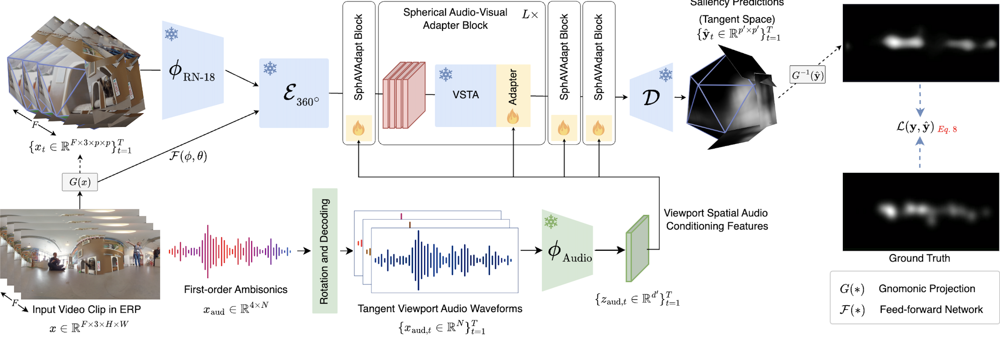

Omnidirectional videos (ODVs) are redefining viewer experiences in virtual reality (VR) by offering an unprecedented full field-of-view (FOV).
This study extends the domain of saliency prediction to 360◦ environments, addressing the complexities of spherical distortion and the integration of spatial audio.
Contextually, ODVs have transformed user experience by adding a spatial audio dimension that aligns sound direction with the viewer’s perspective in spherical scenes.
Motivated by the lack of comprehensive datasets for 360◦ audio-visual saliency prediction, our study curates YT360-EyeTracking, a new dataset of 81 ODVs, each observed under varying audio-visual conditions.
Our goal is to explore how to utilize audio-visual cues to effectively predict visual saliency in 360◦ videos.
Towards this aim, we propose two novel saliency prediction models:
SalViT360, a vision-transformer-based framework for ODVs equipped with spherical geometry-aware spatio-temporal attention layers, and SalViT360-AV, which further incorporates transformer adapters conditioned on audio input.
Our results on a number of benchmark datasets, including our YT360-EyeTracking, demonstrate that SalViT360 and SalViT360-AV significantly outperform existing methods in predicting viewer attention in 360◦ scenes.
Interpreting these results, we suggest that integrating spatial audio cues in the model architecture is crucial for accurate saliency prediction in omnidirectional videos.
Model Overview

Overview of the proposed SalViT360-AV pipeline.
We use the SalViT360 [1] model as the video saliency module (top), and our implementation allows for any audio model as the audio backbone (bottom).
The audio stream takes input spatial audio waveforms \(x_{aud} \in \mathbb{R}^{4 \times N}\) encoded as first-order ambisonics in 4-channel B-format.
To simulate what the subjects are hearing while looking at a particular location, we rotate the ambisonics depending on the angular coordinates \((\theta, \phi)\) for each tangent viewport \(\{x_t\}_{T}^{t=1}\) (1).
The rotated waveforms are mono, which enables us to use any pre-trained audio backbone for feature extraction (2).
The extracted features are passed to the adapter layers in each upgraded transformer block (3) for audio-visual tuning.
While the total number of parameters in the video pipeline is 37M, the additional adapter layers require only 600k parameters for fine-tuning.
We curated a subset of 360° videos with first order ambisonics from YT-360 Dataset
containing equal amounts of clips from each scene type (indoor, outdoor-natural, and outdoor-manmade) and audio type (human speech, music instrument, and vehicle sounds).
Each category combination has 9 clips, totaling 81 clips.
Qualitative comparison of Ground Truth saliency maps and SalViT360-AV predictions on
YT360-EyeTracking
and
360AV-HM
datasets.
Click here for more qualitative results.
@misc{cokelek2023spherical,
title={Spherical Vision Transformer for 360-degree Video Saliency Prediction},
author={Mert Cokelek and Nevrez Imamoglu and Cagri Ozcinar and Erkut Erdem and Aykut Erdem},
year={2023},
eprint={2308.13004},
archivePrefix={arXiv},
primaryClass={cs.CV}
}